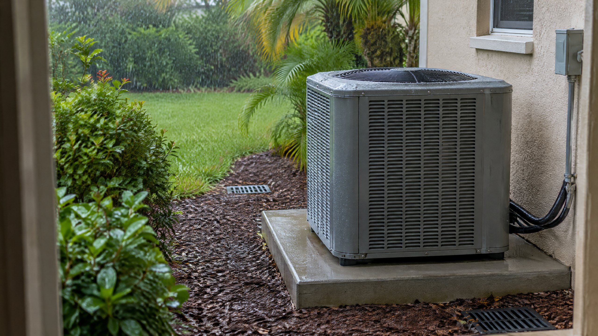

Ordinary Rain Is Not the Same as Floodwater
An outdoor central AC unit is meant to be outdoors. Rain on its closed cabinet is different from rising water reaching equipment, a tree limb striking it, or damaged electrical components becoming exposed. Lennox explains that modern outdoor air conditioners are designed to live and operate outside, with components built to tolerate weather. That supports normal weather exposure, not a promise that every installation can withstand any storm. [1]
For a Tampa homeowner, the useful question is not simply “Is the unit wet?” It is “Is this ordinary rainfall around intact equipment, or has something changed?” This article concerns a properly installed outdoor central AC unit. A damaged cabinet, known electrical problem, or equipment-specific restriction changes the decision. Follow your actual model’s instructions rather than using a general article to override them.
What Should Change Your Decision?
Separate the weather condition from the equipment symptom. Rain alone does not establish an AC fault, and the absence of visible damage does not establish that flooded equipment is ready to run. These distinctions help you decide whether normal operation, weather precautions, or a professional assessment is appropriate.
| Condition | What it means | Response |
|---|---|---|
| Ordinary rain; intact equipment; no unusual symptoms | Expected outdoor weather exposure | Rain alone normally does not require shutting off cooling; follow model instructions. |
| Thunder or lightning nearby | An electrical-weather hazard, not just a wet cabinet | Stay indoors and follow weather guidance; do not go outside to disconnect equipment. |
| Floodwater reached equipment | Possible electrical, control, or refrigeration damage | Do not attempt a trial restart; arrange qualified assessment. |
| New breaker trips, damage, or lost cooling | A system problem requiring diagnosis | Report what changed and request assessment rather than repeated resets. |
Does Lightning Change the Answer?
Yes. A thunderstorm adds risks that ordinary rainfall does not. The National Weather Service explains that lightning can enter buildings through wiring and other paths, and electrical surges can damage equipment away from the actual strike. Keeping an AC running in normal rain is not the same question as protecting equipment during an electrical storm. [2]
Plan any equipment shutdown or protective work before severe weather arrives, following manufacturer instructions and professional advice. During an active thunderstorm, do not walk outside to an AC disconnect, touch exposed electrical equipment, or try to unplug equipment. NWS specifically warns against unplugging equipment during a thunderstorm and advises avoiding electrical equipment and exterior windows. Personal protection takes priority over inspecting the condenser. [2]
Turning a thermostat off is not a guarantee against lightning damage or a substitute for electrical isolation. Do not improvise isolation or surge-protection work. If you want an equipment-specific storm plan, discuss it with a professional before the next event, not while lightning is occurring.
What If Water Rose Around the Outdoor Unit?
Flood exposure needs a different response from rain droplets. Do not stand in water, open panels, or restart the system to find out whether it still works. Looking dry later does not establish that electrical controls or connections are unaffected.
AHRI advises qualified inspection of flood-exposed heating and cooling equipment. Its split-system guidance calls for checking electrical and refrigeration connections at both indoor and outdoor units, including control circuits. It also notes that movement of equipment can damage the sealed refrigerant system. The repair-or-replacement decision needs professional evaluation; do not interpret a running fan or dry-looking cabinet as clearance to operate. [3]
If water is approaching equipment or your building, follow emergency guidance rather than attempting an outdoor HVAC inspection. On The Way’s AC repair service can assess equipment concerns when site conditions permit access. Report whether water actually reached the unit, whether it moved, and whether indoor equipment was exposed too.
Should You Put a Tarp Over a Running AC?
No. Do not wrap or drape a tarp over operating equipment to keep ordinary rain off it. Outdoor AC equipment needs open airflow. Lennox warns against airflow-restricting covers and explains that trapped moisture can cause problems. A makeshift wrap is not equivalent to an engineered, model-approved accessory. [1]
For the separate question of seasonal storage covers and accessories, see whether you should cover your outdoor AC unit in Tampa. Normal outdoor exposure does not justify altering clearances, adding a roof, or mounting a cover without equipment-specific guidance. Any unusual runoff or drainage concern should be assessed without obstructing the unit.
What If the AC Stops Cooling When It Rains?
A repeated rain-related failure deserves investigation, but timing alone is not a diagnosis. Describe whether cooling stopped, a breaker tripped, the outdoor unit became quiet, or the thermostat changed. Do not open a wet electrical compartment or keep restarting the system to reproduce the problem.
From indoors, record when the symptom began and whether there was thunder, a power interruption, or known flood exposure. After the weather has passed, share existing photographs or observations without approaching damaged equipment. Our AC breaker-trip article explains why repeated resets are not a repair, while AC running but not cooling covers the broader symptom outside this weather question.
A technician should establish which equipment was affected and whether controls, connections, physical damage, or another system problem explains the failure. Rain timing is useful evidence, not proof that a particular part needs replacement. For routine condition and airflow concerns rather than active damage, ask about AC maintenance.
Frequently Asked Questions
Do I need to turn off central AC every time it rains?
Normally, no. Intact outdoor central AC equipment is designed for outdoor weather exposure. Ordinary rain alone is not the same as lightning, flooding, physical damage, or an equipment fault. Follow your model’s operating instructions and assess any unusual symptoms separately.
Does rain mean my outdoor AC unit needs a cover?
No. Do not put a tarp or wrap over a running outdoor AC unit. It needs unobstructed airflow. Discuss any model-approved accessory or unusual drainage concern separately; a cover is not a guarantee against storm damage.
Can I restart the AC once floodwater has gone down?
Do not attempt a trial restart after floodwater reaches equipment. A dry-looking cabinet does not establish that controls and connections are unaffected. Have a qualified professional assess the exposed indoor and outdoor equipment before operation.
Does an AC failure during rain prove lightning damage?
No. The timing is a clue to report, not proof of lightning damage or a failed component. Record power interruptions, breaker trips, lost cooling, and known water exposure so a technician can investigate the actual cause.
Sources & Editorial Notes
- Lennox: Should I Cover My AC Unit in the Winter? Outdoor weather exposure and airflow restrictions; model-specific guidance still applies.
- National Weather Service: Lightning Indoors Electrical paths, surges, and precautions during active thunderstorms.
- AHRI: Floods and HVACR Equipment Qualified evaluation of flood-exposed equipment and split-system connections.
Editorial Source Review & Publisher
Published by On The Way Heating & Air for Tampa and North Tampa homeowners. This general explanation draws on manufacturer, federal weather, and HVAC industry guidance; it is not a diagnosis, a current weather alert, or permission to operate damaged equipment. Model instructions and an assessment of actual conditions take precedence.